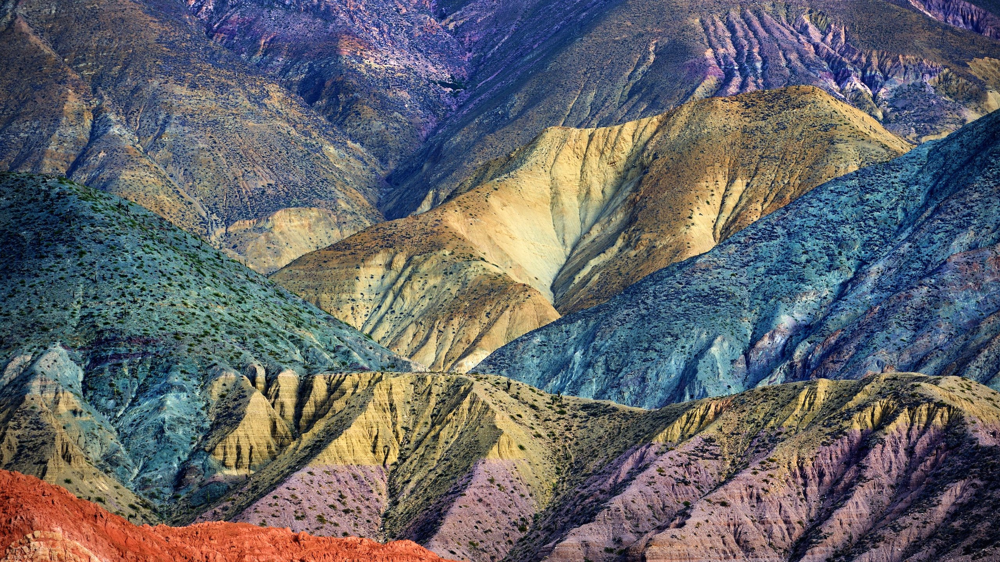

JUJUY
Jujuy recibe a sus visitantes con una gran variedad de magníficos paisajes y culturas tradicionales.

Jujuy recibe a sus visitantes con una gran variedad de magníficos paisajes y culturas tradicionales.

Uruguay es provincia conocida por su interior verde y costa bordeada de playas.

La Provincia de Córdoba es un destino ideal para experimentar las más diversas sensaciones que a un viajero le puedan provocar placer

Tren de las nubes

Cataratas del Iguazú

El Calafate

Es una comida que consiste básicamente en un chorizo asado que se sirve entre dos trozos de pan, típica de la gastronomía de Argentina.

huminta es una comida basada en el maíz que se consume en el área andina

La carne asada es una tradición añeja proveniente de las grandes extensiones fértiles de la llanura pampeana.